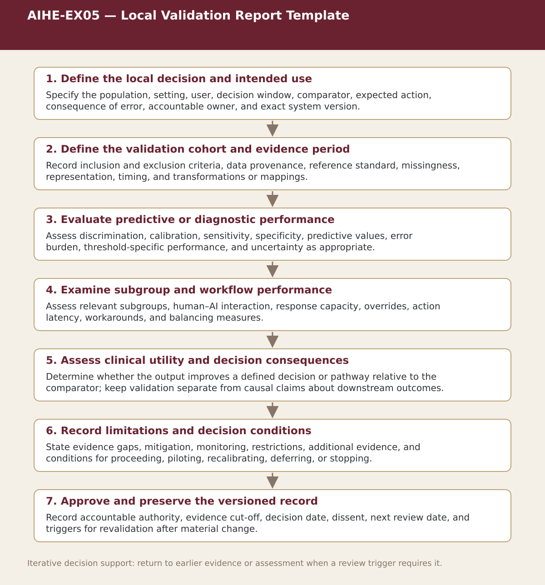

Supplemental specialist tool · Chapter 11
AIHE-EX05 — Local Validation Report Template
Document intended use, local cohort, exact system version, discrimination, calibration, threshold-specific performance, subgroup findings, workflow, clinical utility, uncertainty, and the resulting local decision.

Process steps
| Step | Purpose | Review |
|---|---|---|
| 1. Define the local decision and intended use | Specify the population, setting, user, decision window, comparator, expected action, consequence of error, accountable owner, and exact system version. | Scope is sufficiently precise for local validation |
| 2. Define the validation cohort and evidence period | Record inclusion and exclusion criteria, data provenance, reference standard, missingness, representation, timing, and transformations or mappings. | Cohort and data are fit for the stated validation question |
| 3. Evaluate predictive or diagnostic performance | Assess discrimination, calibration, sensitivity, specificity, predictive values, error burden, threshold-specific performance, and uncertainty as appropriate. | Performance is interpretable against predefined requirements |
| 4. Examine subgroup and workflow performance | Assess relevant subgroups, human–AI interaction, response capacity, overrides, action latency, workarounds, and balancing measures. | No unresolved subgroup or workflow issue prevents the next step |
| 5. Assess clinical utility and decision consequences | Determine whether the output improves a defined decision or pathway relative to the comparator; keep validation separate from causal claims about downstream outcomes. | The system has a defensible use case or requires further evaluation |
| 6. Record limitations and decision conditions | State evidence gaps, mitigation, monitoring, restrictions, additional evidence, and conditions for proceeding, piloting, recalibrating, deferring, or stopping. | Decision conditions and non-compensatory safeguards are explicit |
| 7. Approve and preserve the versioned record | Record accountable authority, evidence cut-off, decision date, dissent, next review date, and triggers for revalidation after material change. | Proceed, pilot, recalibrate, defer, restrict, or stop |
Status. This process map is a navigation and decision-support aid. Adapt it to the relevant jurisdiction, institution, population, workflow, technology version, evidence cut-off, and accountable authority.